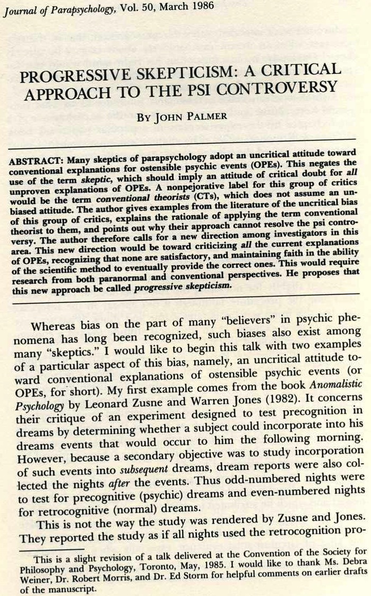
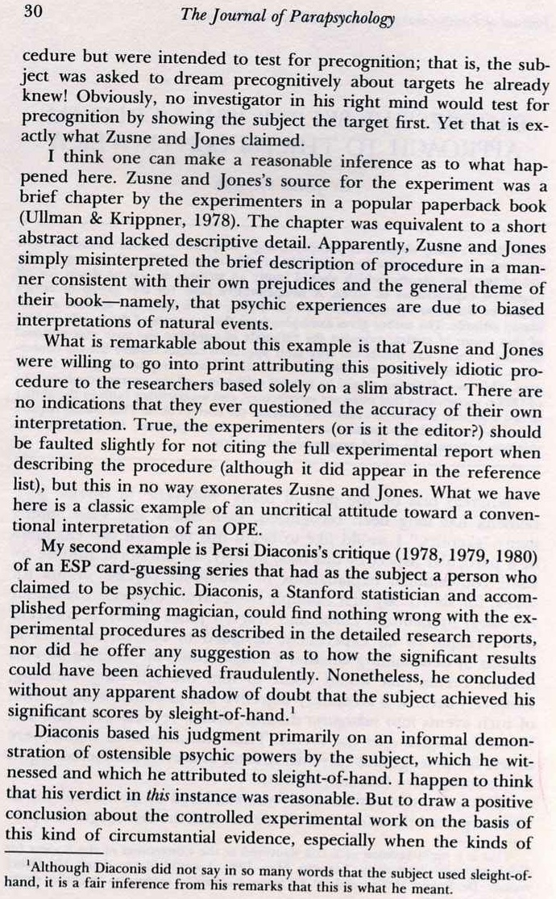

Many skeptics of parapsychology adopt an uncritical attitude toward conventional explanations for ostensible psychic events (OPEs). This negates the use of the term skeptic, which should imply an attitude of critical doubt for all unproven explanations of OPEs. A nonpejorative label for this group of critics would be the term conventional theorists (CTs), which does not assume an unbiased attitude. The author gives examples from the literature of the uncritical bias of this group of critics, explains the rationale of applying the term conventional theorist to them, and points out why their approach cannot resolve the psi controversy. The author therefore calls for a new direction among investigators in this area. This new direction would be toward criticizing all the current explanations of OPEs, recognizing that none are satisfactory, and maintaining faith in the ability of the scientific method to eventually provide the correct ones. This would require research from both paranormal and conventional perspectives. He proposes that this new approach be called progressive skepticism.

Whereas bias on the part of many “believers” in psychic phenomena has long been recognized, such biases also exist among many “skeptics.” I would like to begin this talkThis is a slight revision of a talk delivered at the Convention of the Society for Philosophy and Psychology, Toronto (Ontario), . I would like to thank Ms. Debra Weiner, Dr. Robert Morris, and Dr. Ed Storm for helpful comments on earlier drafts of the manuscript. with two examples of a particular aspect of this bias, namely, an uncritical attitude toward conventional explanations of ostensible psychic events (or OPEs, for short). My first example comes from the book Anomalistic Psychology by Leonard Zusne and Warren Jones () Zusne, L., & Jones, W. H.: Anomalistic psychology, Hillsdale (NJ), Lawrence Erlbaum, . It concerns their critique of an experiment designed to test precognition in dreams by determining whether a subject could incorporate into his dreams events that would occur to him the following morning. However, because a secondary objective was to study incorporation of such events into subsequent dreams, dream reports were also collected the nights after the events. Thus odd-numbered nights were to test for precognitive (psychic) dreams and even-numbered nights for retrocognitive (normal) dreams.

This is not the way the study was rendered by Zusne and Jones. They reported the study as if all nights used the retrocognition procedure but were intended to test for precognition; that is, the subject was asked to dream precognitively about targets he already knew! Obviously, no investigator in his right mind would test for precognition by showing the subject the target first. Yet that is exactly what Zusne and Jones claimed.
I think one can make a reasonable inference as to what happened here. Zusne and Jones’s source for the experiment was a brief chapter by the experimenters in a popular paperback book (Montague Ullman & Stanley Krippner, ) Ullman, M., & Krippner, S.: Experimental dream studies, in M. Ebon (Ed.), The Signet handbook of parapsychology, pp. 393-408, New York, New American Library, . The chapter was equivalent to a short abstract and lacked descriptive detail. Apparently, Zusne and Jones simply misinterpreted the brief description of procedure in a manner consistent with their own prejudices and the general theme of their book—namely, that psychic experiences are due to biased interpretations of natural events.
What is remarkable about this example is that Zusne and Jones were willing to go into print attributing this positively idiotic procedure to the researchers based solely on a slim abstract. There are no indications that they ever questioned the accuracy of their own interpretation. True, the experimenters (or is it the editor?) should be faulted slightly for not citing the full experimental report when describing the procedure (although it did appear in the reference list), but this in no way exonerates Zusne and Jones. What we have here is a classic example of an uncritical attitude toward a conventional interpretation of an OPE.
My second example is Persi Diaconis’s critique (, , ) Diaconis, P.: Statistical problems in ESP research, Science, vol. 201, pp. 131-136, Diaconis, P.: Rejoinder to Edward F. Kelly, Zetetic Scholar, n° 5, pp. 29-31, , n° 6, pp. 30-31, of an ESP card-guessing series that had as the subject a person who claimed to be psychic. Diaconis, a Stanford statistician and accomplished performing magician, could find nothing wrong with the experimental procedures as described in the detailed research reports, nor did he offer any suggestion as to how the significant results could have been achieved fraudulently. Nonetheless, he concluded without any apparent shadow of doubt that the subject achieved his significant scores by sleight-of-hand.Although Diaconis did not say in so many words that the subject used sleight-of-hand, it is a fair inference from his remarks that this is what he meant.
Diaconis based his judgment primarily on an informal demonstration of ostensible psychic powers by the subject, which he witnessed and which he attributed to sleight-of-hand. I happen to think that his verdict in this instance was reasonable. But to draw a positive conclusion about the controlled experimental work on the basis of this kind of circumstantial evidence, especially when the kinds of “tricks” ostensibly used in the demonstration were controlled against in the experiments, is unwarranted. Moreover, the degree of psychic power ostensibly demonstrated in the experiments, while impressive by parapsychological research standards, would not have been at all impressive in a theatrical setting. Thus, even if the subject had psychic powers, it is understandable why he might not choose to rely on them in that type of setting. If this consideration ever occurred to Diaconis, there is no evidence of it in his critique.
One of course cannot condone the subject’s use of legerdemain, if it in fact took place, but that is not the issue here. Neither is it my purpose to show that Diaconis was necessarily wrong; he could still be proven right, and he has raised a legitimate concern. My purpose is, rather, to point out that Diaconis’s apparently supreme confidence in the correctness of his conclusion about the experimental outcomes, which he based on circumstantial evidence from another setting (supplemented by unfavorable impressions he had acquired of some other researchers), betrays the same uncritical attitude toward conventional explanations of OPEs that Zusne and Jones exhibited.